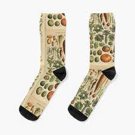
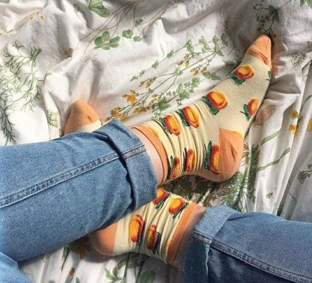
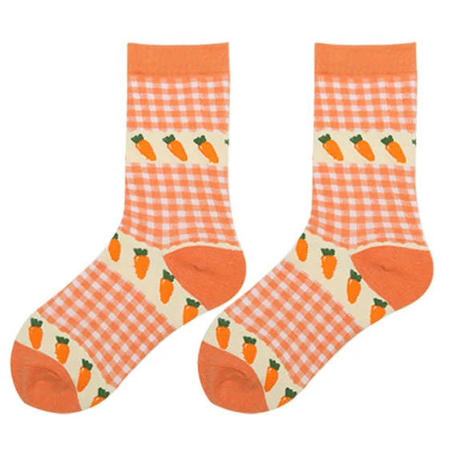
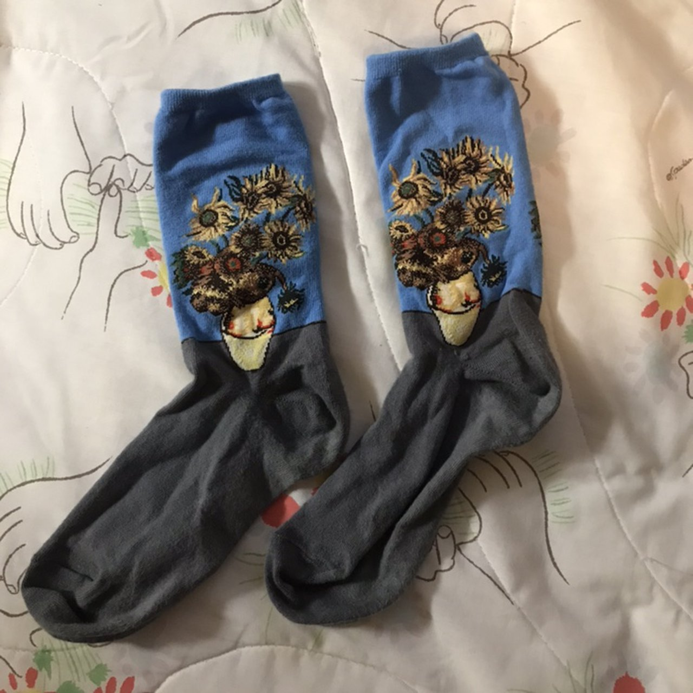
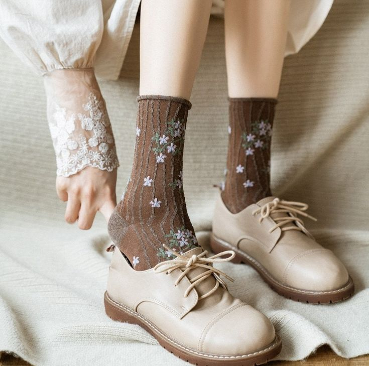
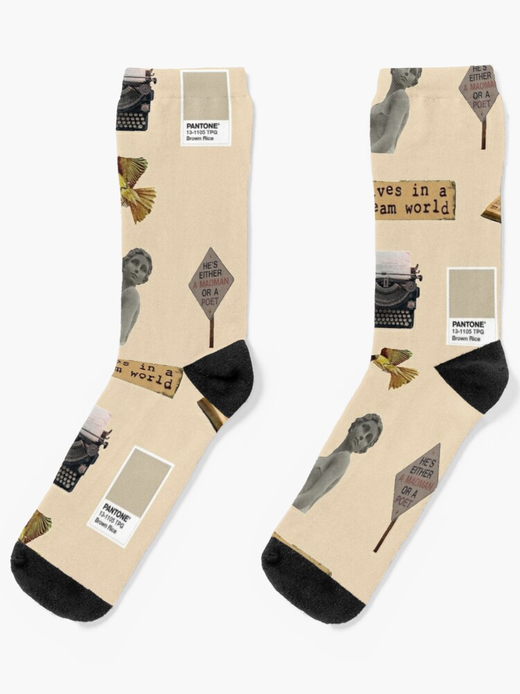
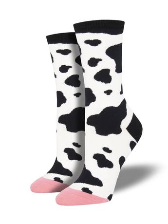
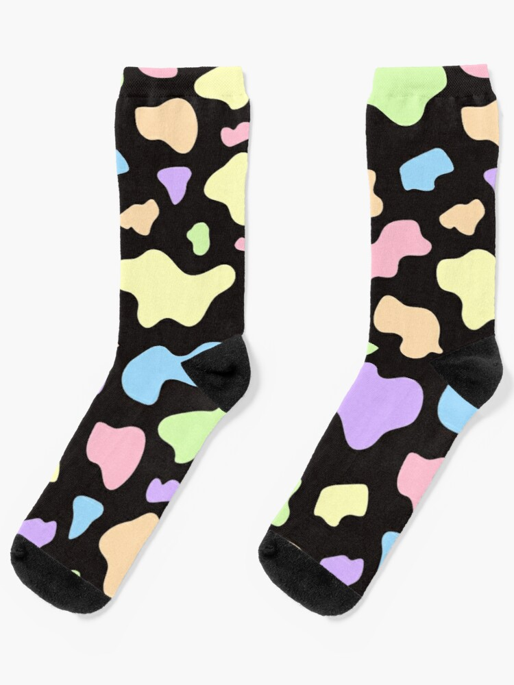
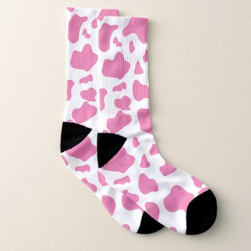

Socks have evolved very much over the centuries from the earliest socks, made from animal skin and tied around the ankles. Because the making of socks was time-consuming in pre-sock-making-machine times, socks were only worn by the rich people. The poor people wore footwraps which were old cloths that they wrapped around their feet and ankles. The ancient greek wore foot covers/sock-ish things which were made from matted animal hair and fur. The ancient Romans wrapped their feet with leather or some sort of fabric. During the Middle Ages, the length of shorts and pants was extended and the sock became a tight, bright colored cloth, covering the lower part of the leg, ankle and foot. Since socks did not have an elastic band at the top, garters were placed over the top of the socks to prevent them from slipping down. By 1000 AD, socks became a symbol of wealth among the nobility and royalty. The invention of a sock-making-machine-thing in 1589 meant that socks could be knitted a lot faster than they could be by hand. The next revolution in sock production was the invention of nylon fabric in 1938. Until then, socks were commonly made from silk, cotton and wool.
Source: Wikipedia
here is a cool video about the history of socks and sandalswhen i say "vintage style socks" i mean 1970's to late 1990's style socks, usually consisting of bright colors or quirky patterns, lots of fruit and veggies.
   dark academia aka the harry potter aesthetic is a very dark, woody and old aesthetic. So, what is dark academia? well, accroding to wikipedia: "Dark academia is a social media aesthetic and subculture centered around higher education, writing/poetry, the arts, and classic Greek and Gothic architecture. The subculture is associated with ancient art, and classic literature."
 cow print is great. it looks cute on socks lol
  